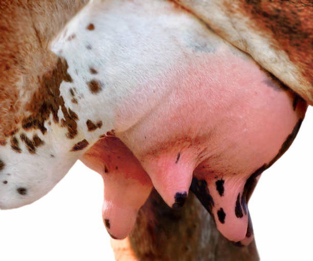
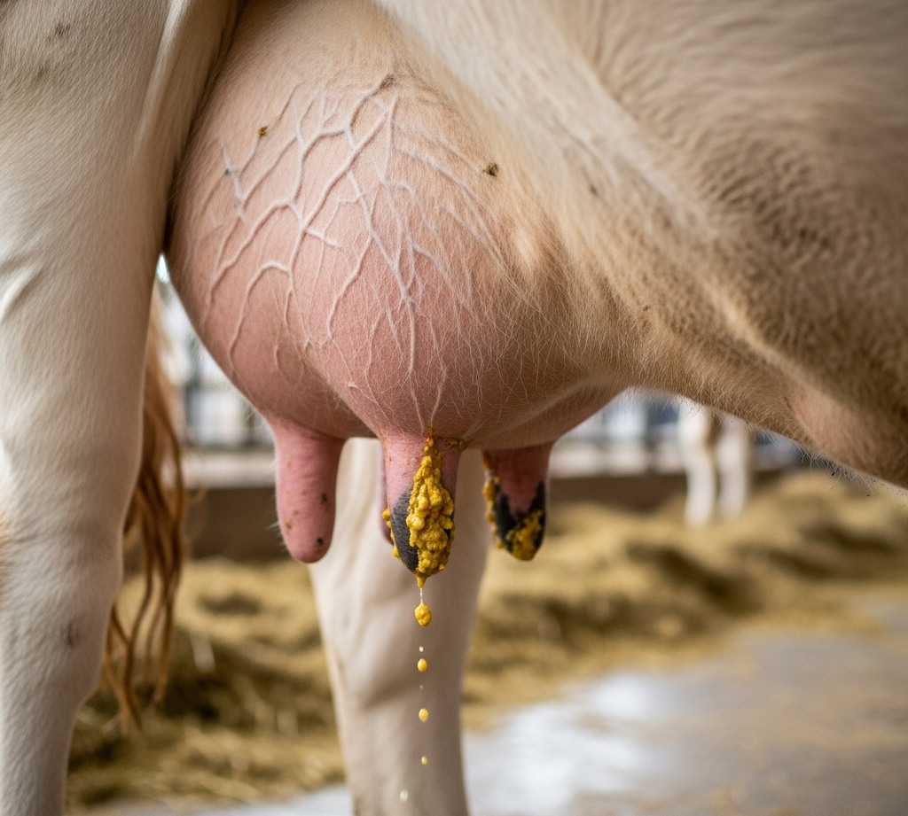
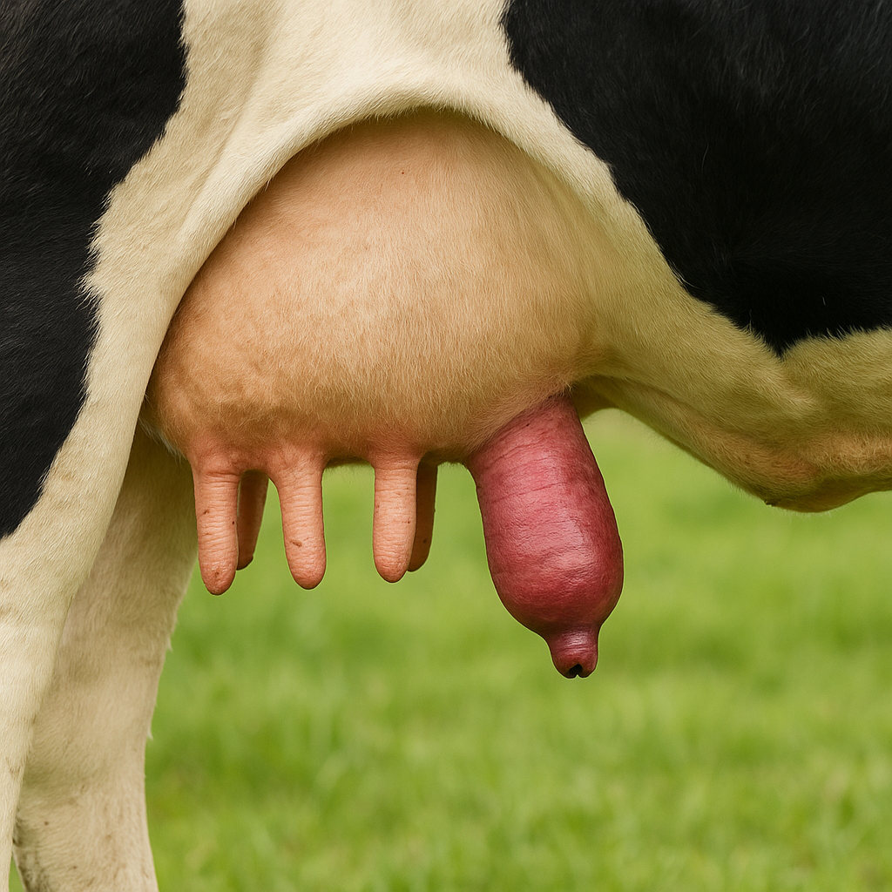
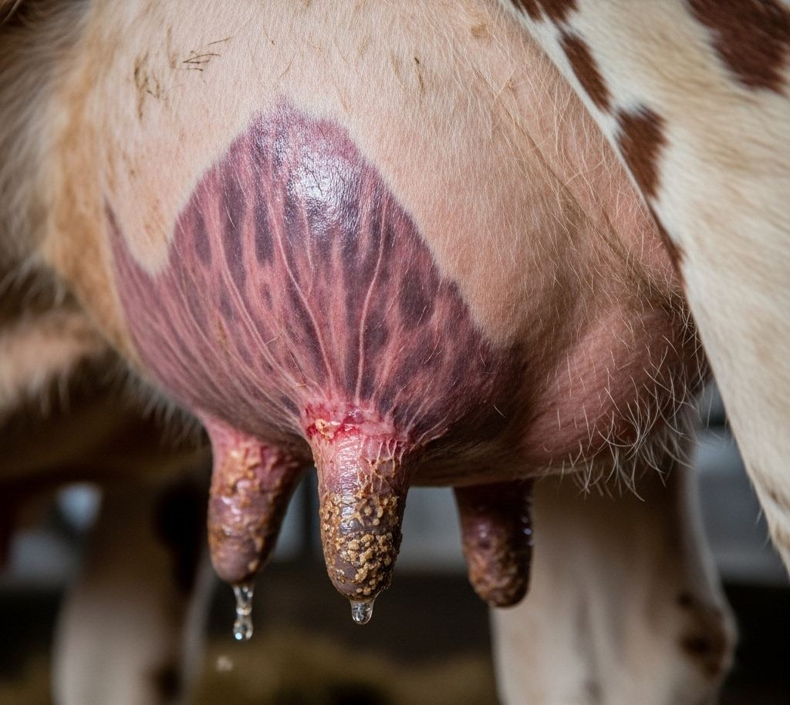
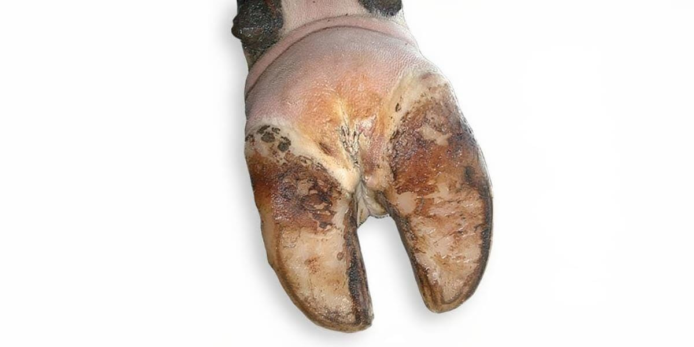
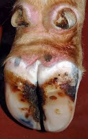
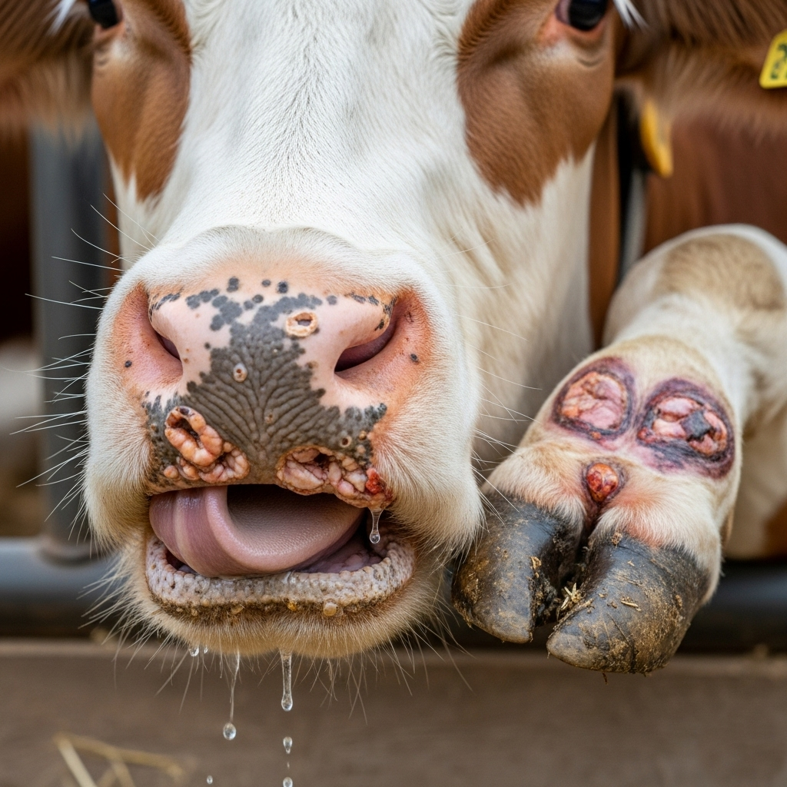
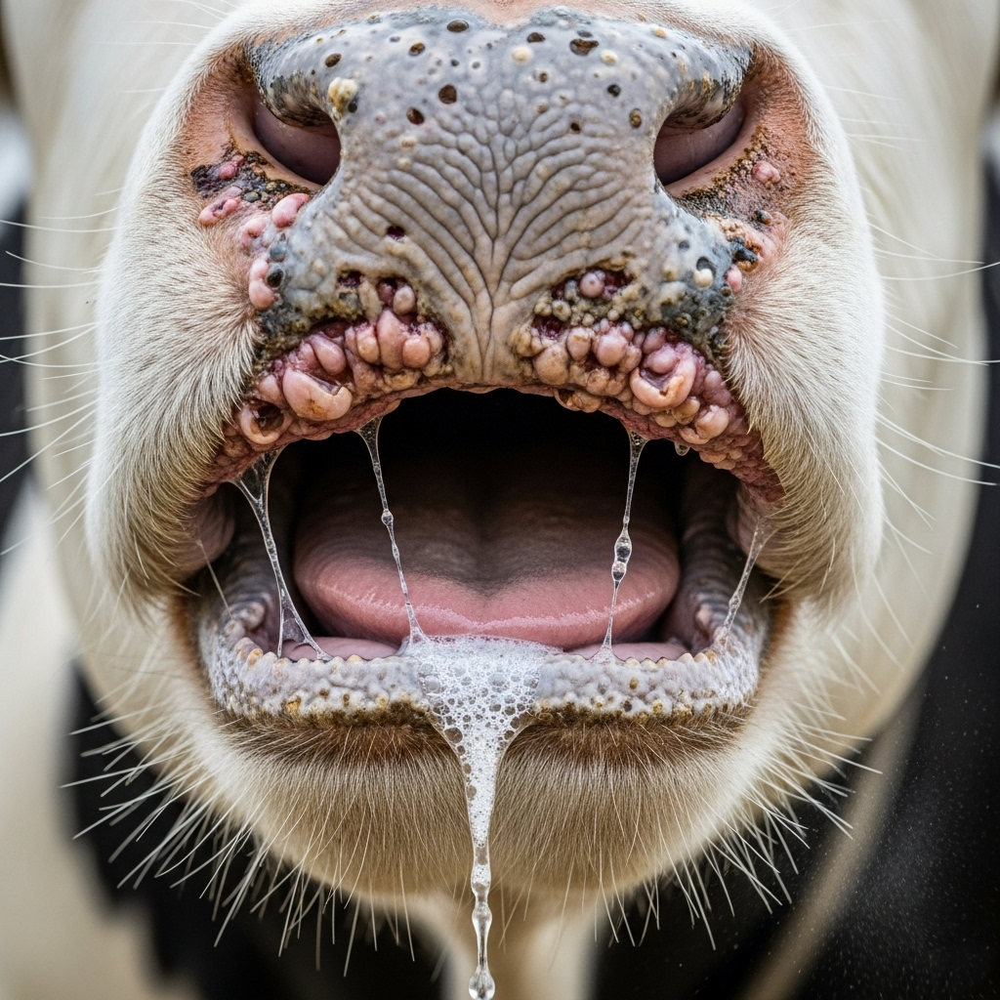

Bovine Disease Detection System
FMD & Mastitis Analysis
FMD & Mastitis Analysis










Foot-and-Mouth Disease (FMD) is a highly contagious viral infection affecting cloven-hoofed animals like cows, buffaloes, goats, and pigs. The virus spreads quickly through saliva, milk, air, and contaminated feed or equipment. Infected animals develop painful blisters in the mouth, tongue, lips, feet, and teats. These blisters burst, causing difficulty in eating, walking, and milking. Although FMD rarely kills adult cattle, it drastically reduces milk yield, weakens growth in young animals, and causes significant economic losses due to trade restrictions and reduced productivity.
AI-Powered Veterinary Diagnosis Tool: Welcome to our intelligent veterinary support platform, designed to assist in the early detection of Foot-and-Mouth Disease (FMD) and Mastitis in cattle. Using a hybrid approach that combines symptom-based and image-based analysis, the system provides accurate predictions to support farmers and veterinary professionals in making timely decisions.
Farmers needing accessible early-stage disease diagnosis, veterinarians looking for quick support tools, researchers and students exploring AI applications in agriculture.

Watch this video to see how our system works: